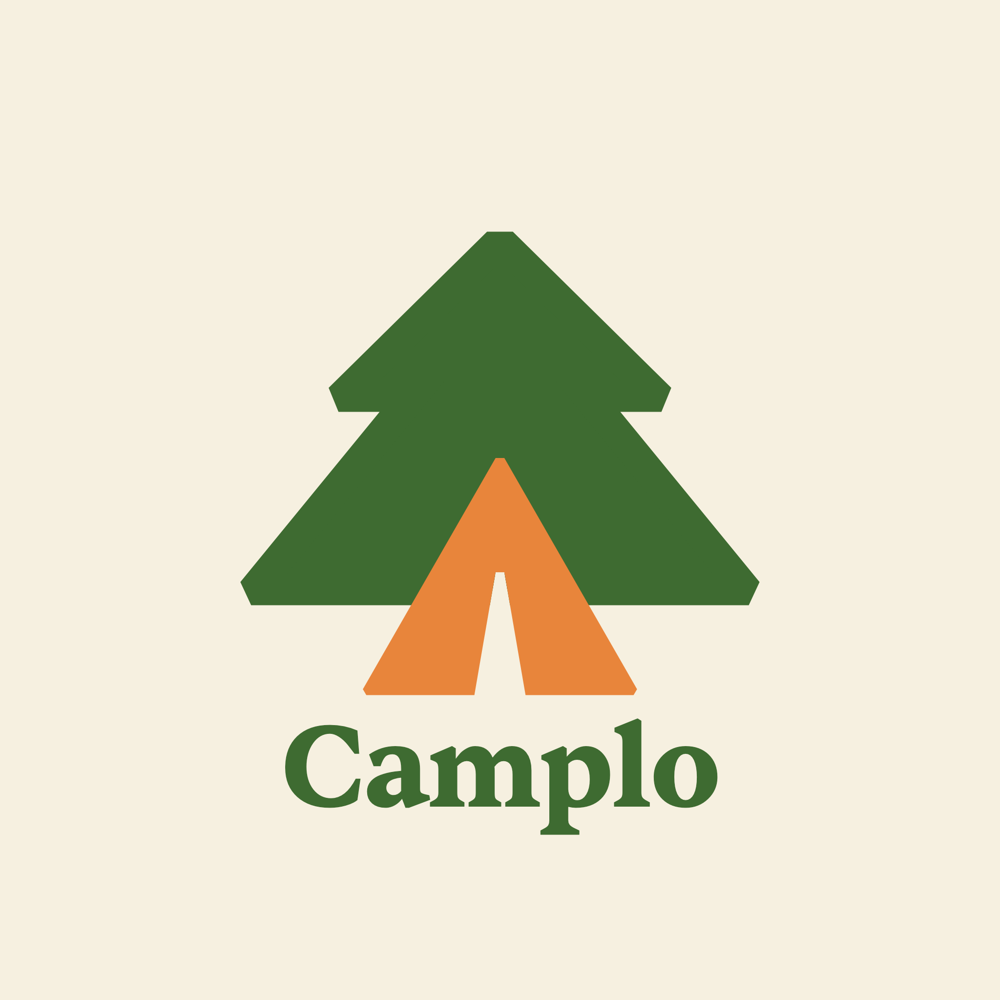
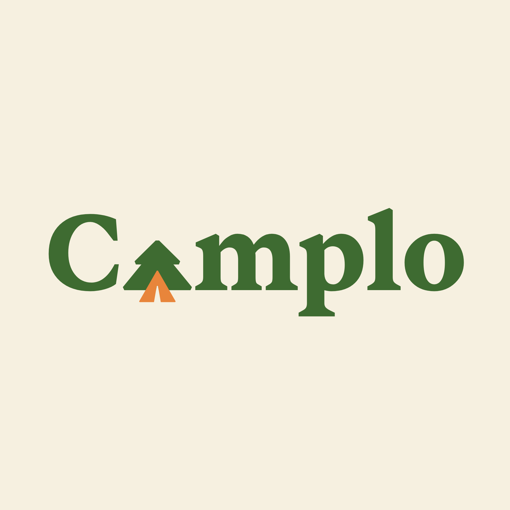

Le logomark seul pour les favicons, pfp, petites surfaces. Le wordmark "nom dessous" pour signature, carte d'affaires, mockups. Le wordmark intégré (le pin+tente remplace le "a") pour en-têtes, papeterie, usage principal.

Fern (vert forêt) et marmalade (orange brûlé) portent la marque. Paper (crème) est le support dominant. Fern-deep et ink pour les sections sombres et le texte. Pas de troisième couleur de marque.
Sentient est la typo display — serif aux terminaisons squared qui matchent les coins du logo. Satoshi porte le corps de texte. General Sans marque les labels et les eyebrows.
Quelques garde-fous pour garder la marque cohérente. La marque vit dans des supports imprimés et numériques, mobiles et desktop. Ces règles évitent les dérives.
Le cream #F6F0E0 porte la marque. Les sections sombres fern-deep sont des moments de rupture, pas la norme.
Les tropes visuels SaaS 2026 (wave fields, glass blur, violet gradient) dissolvent le positioning artisanal québécois.
Orange brûlé sur le bouton principal, citations, italiques. Jamais comme couleur de fond dominante.
Photos pro réelles du client, ou text-only. Unsplash people/laptops/forêts sont interdits.
Les terminaisons tronquées du logo (apex + chamfers) dialoguent avec les bracket serifs de Sentient. Garder ce langage partout.
L'ancien logo (stroke-linejoin round, Q curves sur tente) est déprécié. Utiliser exclusivement la version squared.
La marque est québécoise. Tous les supports en français par défaut. Version anglaise quand on atteint 10+ clients QC.
Icônes rondes centrées avec titre et paragraphe — pattern SaaS générique. La marque respire en éditorial, pas en tableau.